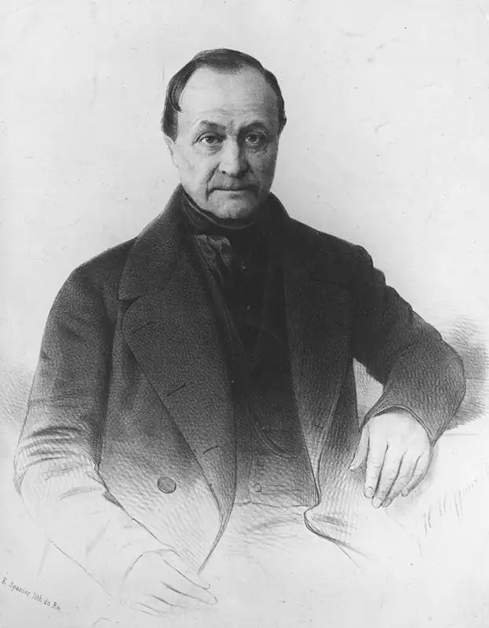
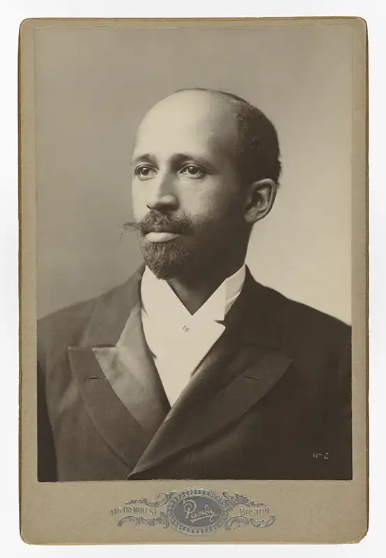
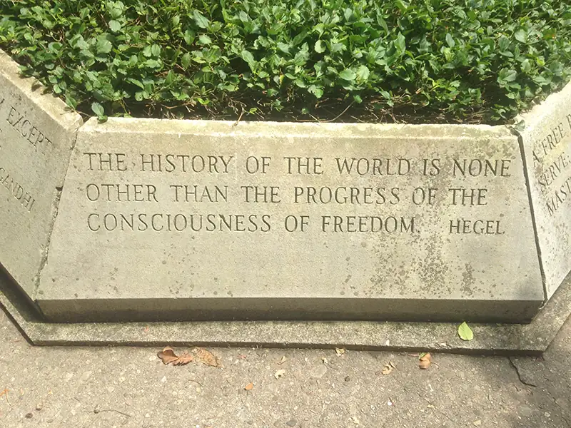
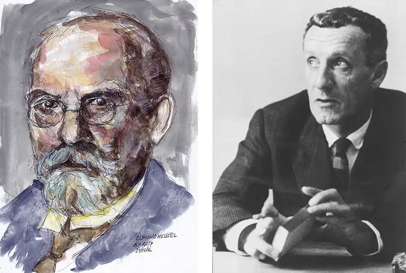
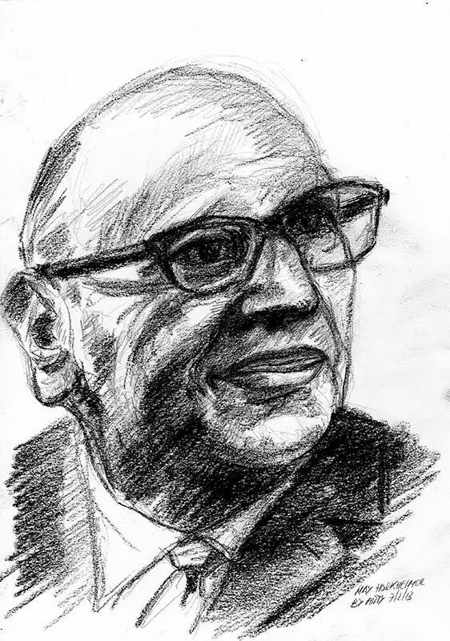
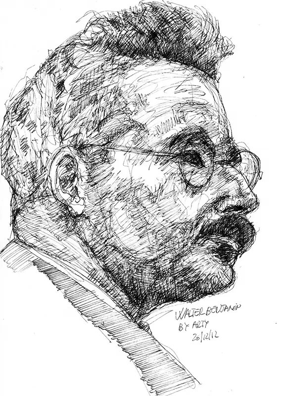
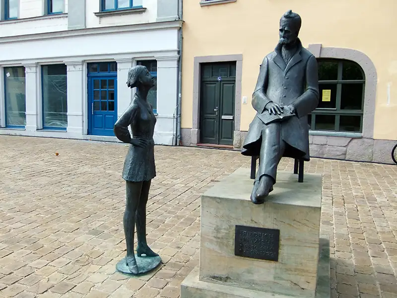

Chapter 12: Contemporary Philosophies and Social Theories¶
Introduction¶
The modern era has witnessed rapid change that improved the lives of many but also created new social problems. The 17th to 19th centuries included the Enlightenment, the scientific revolution, and the Industrial Revolution. During this period, great unrest occurred, with social contract theory spawning revolutions in Europe and the Americas. The emergence of capitalism on the ruins of feudalism fueled the rise of a low-paid urban labor force and a ballooning of numerous related social ills, such as poverty and crime.
Philosophers around the world and throughout history—including Buddha, Plato, and Confucius—have proposed systems of thought to address the social problems of their age. Three major philosophical movements arose to address the challenges of the modern era. In Europe, the Enlightenment—often dated from 1685 to 1815 and also called the Age of Reason—inspired societies to turn to reason, science, and technology to achieve better lives for individuals and steady progress for the human race. New fields of social science arose, among them sociology, as a means of impartially studying and presenting solutions to social problems. New institutions were developed to implement these solutions, many of which still exist today—among them democratic government, national banks and lending programs, and a wide array of nonprofit organizations to serve those in need.
The economic progress of this era relied on the system of capitalism, which many thinkers in the early 19th century blamed for producing the bulk of human suffering they witnessed. These thinkers increasingly embraced a type of socialism called Marxism, which advocated for a communist revolution that placed the working class in control of the government and economy. Marxist ideology predicted that communist revolutions would inevitably take place as capitalism advanced within the industrializing world and that these revolutions would create a society devoid of major social problems. Neither of these predictions were realized. Instead, Russia, China, and many countries in Africa, Asia, and South America underwent communist and socialist revolutions but failed to achieve the economic or political equality that Marx had envisioned.
Marxist theorists began rejecting both the inevitability of revolution and the Enlightenment belief that the pursuit of knowledge would lead to progress. Instead, they viewed knowledge as reflective of systems of power. They argued that philosophers must take on a new role. Rather than be impartial observers, philosophers must change the way people engage in public discourse in order to cast light on oppression and ultimately accomplish Marx’s goal of an equal society. This branch of philosophy became known as critical theory. Currently, politicians, school board members, teachers, and parents—among others—are active in debates about the inclusion of critical race theory in educational curriculums.
This chapter examines the philosophies of Enlightenment social theory, Marxist theory, and critical theory that inform so much of the way we live our lives today.
12.1 Enlightenment Social Theory¶
Learning Objectives
By the end of this section, you will be able to:
- Evaluate Enlightenment ideas of progress.
- Describe positivism.
- Outline the emergence of empirical sociology as a means of solving social problems.
Enlightenment thinkers proposed that human reason coupled with empirical study of the physical world would lead to progress—namely, the advancement of science and the improvement of the human condition. While time-, labor-, and life-saving scientific advances benefited many, the economic developments of the era exacerbated inequality and pushed many others into poverty. Concerns also grew about the power of governments and other institutions and the role of the individual in increasingly complex and interconnected economic and social systems. Political theorists such as John Locke (1632–1704) and Jean-Jacques Rousseau (1712–1778) proposed social contract theory, which spoke to the protection of individual freedoms. And new fields emerged to study and attempt to address the social problems that were developing.
Connections
The chapter on political theory examines social contract theories that addressed the protection of individual freedoms.
Rationalism and Empiricism¶
Enlightenment thinkers proposed that the knowledge needed to improve social conditions could be gathered through rationalism, which regards reason as the source of most knowledge, and empiricism, which relies upon the evidence provided by experiments. The French thinker René Descartes (1596–1650) argued that true knowledge could be acquired through reason alone, without relying on experience. Descartes’s famous quote “I think therefore I am” insists that we know what we know due to abstract reason. For example, knowing that one plus one equals two is a function of reason rather than personal experience.
Other Enlightenment thinkers, including the English philosophers Francis Bacon (1561–1626) and John Locke (1632–1704), believed that knowledge could be gained only through empirical methods, including direct and indirect observation and experience. According to these thinkers, we make deductions from observations that suggest patterns or connection. These deductions can then be tested by systematically observing further phenomena and recording and analyzing data surrounding these phenomena. The scientific method is an empirical method solidified during the Enlightenment period that has become the standard way of conducting any type of objective research.
While rationalism and empiricism seem to be making opposing claims about truth, each has value, and the two can work together. The technological advances of the last 200 years—such as the launching of astronauts into space; the invention of radio, television, and the internet; and the eradication of diseases such as polio—can be said to be the result of both rationalism and empiricism.
Connections
To learn more about the ideas of Descartes and the empiricists, visit the chapter on epistemology and the chapter on logic and reason.
Kant and Ethical Progress¶
The German Enlightenment thinker Immanuel Kant (1724–1804) proposed that reason alone could guide individuals to identify ethical codes that would result in an improved society. These codes, which he called categorical imperatives, could be derived by determining which rules for ethical behavior we might wish to apply to everyone without exception.
Connections
The chapter on normative moral theories digs deeper into Kant’s ethical theory.
Kant believed that applying reason in this way could usher humanity toward a moral society in which each individual would enjoy the greatest possible freedom. However, Kant also believed that this work of reasoning out a moral code could not be accomplished by individuals but must be undertaken by entire societies. Nor could the work be accomplished in one generation; instead, it may take centuries of trial, reflection, and education. Yet, through this pursuit, societies would progress with each generation, ultimately reaching a more perfect moral code and a more ideal society (Dupré 1998).
Comte’s Positivism¶
The French philosopher Auguste Comte (1798–1857) crafted a social theory with the goal of pushing humanity forward toward a more peaceful society—one that could weather the storms of the political revolutions that he experienced in his youth. Considered the first philosopher of science, Comte analyzed the development of the different branches of science that existed in his time. Based on this work, he proposed the law of three stages for the development of societies. In the first stage, individuals attributed the events of life to supernatural forces. In the second stage, individuals recognized that human efforts and natural forces were largely responsible for many events while still acknowledging the power of supernatural forces. In the third stage, individuals shift from focusing on causation to the scientific study of the natural world, human society, and history. In this third stage, Comte believed that humanity would reject religion and focus only on laws or postulates that can be proven. Comte called this third stage positivism.

Grounded in this positivist approach, Comte proposed the establishment of a science of society, which he called sociology. He believed that society, like an organism in nature, could be studied empirically and that this study could result in human progress. Comte’s conception of sociology as a field of study remained in the theoretical realm. A few decades after he first proposed it, however, his theoretical ideas for a new discipline crossed the Atlantic Ocean and found a home in universities in the United States. Here great minds—such as W. E. B. Du Bois, discussed in the next section—established sociology as a practical discipline that could inform the policies and programs of governments and institutions.
Comte believed that humanity would struggle to transition to positivism, as religions provided comforting and meaningful structure and rituals. As a result, Comte founded his own church in 1849, which has as its theoretical legacy the secular humanism of today.
Think Like a Philosopher
Comte struggled with mental health and spent much of his later years in psychiatric hospitals. During this time, he established the structure and rituals for his church. Watch Dr. Bart van Heerikhuizen from the University of Amsterdam discuss Comte’s journey and whether religions are necessary to stabilize society. Then consider how religion serves society—and whether it is necessary in the modern era. Describe the type of church or alternative social institution you would establish to serve the needs of society in the age of science.
Du Bois and Empirical Sociology¶
W. E. B. Du Bois, a prominent American intellectual and civil rights activist, pioneered the use of empirical methods in the field of sociology. When Du Bois first engaged with sociology, the young field of study was largely theoretical. Du Bois criticized early sociologists for making broad generalizations about human societies based on vague, personal impressions rather than first seeking to gather evidence (Westbrook 2018, 200). Du Bois set out to convert sociology into a scientific discipline.
After receiving his PhD from Harvard University in 1895, Du Bois came to the University of Pennsylvania in Philadelphia. Here he conducted a complex investigation into the obstacles that African Americans faced in becoming self-supporting. Over 15 months, Du Bois conducted 2,500 door-to-door interviews, collecting data on demographics, education, literacy, occupation, health, membership in civic organizations, criminality, rates of alcoholism, income levels, home ownership rates, voting practices, and the integration of African Americans into the larger society. He compared his findings with data compiled by the US Census Bureau and other sources to gain more insight. For example, comparing his data regarding the occupations of people living in the Seventh Ward, an African American neighborhood, to 1890 census data on the occupations of people in the whole of Philadelphia, he found that a significantly greater percentage of African Americans were engaged in low-skilled, low-paying occupations. Du Bois’s study and his subsequent book, entitled The Philadelphia Negro: A Social Study, became the first empirical analysis of racism in the United States.

Today we take for granted our ability to find statistics such as the divorce rate, the crime rate, or the average salary for a job in the region where we live. However, the collection of this kind of data and its use as a tool to inform public policies aimed at addressing social problems is a product of Du Bois’s determination to bring science to the study of social issues.
12.2 The Marxist Solution¶
Learning Objectives
By the end of this section, you will be able to:
- Explain the dialectic method.
- Contrast the Hegelian and Marxian concepts of dialectic.
- Outline the stages of Marx’s proletariat revolution.
- Describe how Maoism reframed Marxism as an anti-imperialist revolution.
Unlike Enlightenment social theory, Marxist theories did not try to solve specific social problems that arose from industrialization and urbanization. Rather, they advocated removing the economic system that they felt caused these problems—capitalism. When German philosophers Karl Marx and Frederick Engels published The Communist Manifesto in 1848, they made a prediction: the workers would overthrow capitalism in the most advanced industrial nation, England. The natural forces of history, they argued, made this revolution inevitable. They derived their views of these historical forces from the work of German philosopher Georg Wilhelm Friedrich Hegel (1770–1831) on the dialectic method.
Hegel’s Dialectic Method¶
Hegel argued that history itself was the movement created by the interaction between a thesis (an original state) and a force countering that original state (antithesis), resulting in a new and higher state (synthesis). This dialectic can be likened to a grade report: based on the original grades (the thesis), a student will ideally reflect on their performance and address areas of weakness (antithesis) to ultimately arrive at a higher understanding of the topics under study (synthesis).
Hegel argued that in various eras of history, Absolute Spirit—which might be understood in many ways, including God or the collective human consciousness—confronts its own essence and transitions to a higher state. Hegel saw this most clearly in the life of Jesus and the birth of Christianity. Hegel presents Jesus as a rational philosopher who reflects on and confronts Judaism—antithesis challenging thesis. The resurrection of Jesus following his crucifixion symbolizes an awakened consciousness both in the individual of Jesus and in humanity. Within this framework, the birth of Christianity following Jesus’s resurrection is viewed as the synthesis, the higher state (Dale 2006).

Marx’s Dialectical Materialism and the Proletariat Revolution¶
In contrast to Hegel’s idealistic dialectic, Karl Marx (1818–1883) proposed a view of the dialectic called dialectical materialism. Dialectical materialism identities the contradictions within material, real-world phenomena as the driving force of change. Most important to Marx were the economic conflicts between social classes. The Communist Manifesto, written by Marx and his collaborator Friedrich Engels (1820–1895) states, “The history of all hitherto existing society is the history of class struggles” (Marx and Engels [1969] 2000, ch. 1). Marx and Engels note that in every epoch of history (as understood at the time) society has been divided into social orders and that tensions between these social orders determine the direction of history, rather than the realization of any abstract ideals. Specifically, they identified the colonization of the Americas and the rise of trade with India and China as the revolutionary forces that created and enriched the bourgeois class, ultimately resulting in the death of feudalism. Similarly, Marx regarded the clash of economic interests between the bourgeoisie (owners of the means of production) and the proletariat (workers) as the contradiction that would bring down capitalism and give rise to a classless society (Marx and Engels [1969] 2000).
Connections
For a deeper dive into Marx’s views, visit the chapter on political philosophy.
Marx laid out a detailed plan for how the proletariat revolution would occur. Marx proposed the concept of surplus value as a contradictory force within capitalism. Surplus value was the profit the capitalists made above and beyond the wages of the workers. This profit strengthens the capitalists’ monetarily and so gives them more power over the workers and a greater ability to exploit them. Marx viewed this surplus value as a key part of the “economic law of motion of modern society” that would inevitably lead to revolution (Marx [1954] 1999).
Despite there being competition among workers for jobs, Marx believed that conflict with their employers would bind them. As capitalism advanced, the workers would form into a class of proletariats, which would then form trade unions and political parties to represent its interests. As the revolution advanced, the most resolute members of the working-class political parties, those with the clearest understanding of the movement, would establish the communist party. The proletariat, led by the communists, would then “wrest, by degree, all capital from the bourgeoisie, to centralize all instruments of production in the hands of the State” (Marx and Engels [1969] 2000, ch. 2). The communist party would need to rule society as “the dictatorship of the proletariat” and enact reforms that would lead to a classless society.
These developments did, in fact, materialize—but in Russia, not in England, as Marx had predicted. Marx had expected the revolution to begin in England, since it was the most industrial society, and to spread to other nations as their capitalist economies advanced to the same degree. The unfolding of actual events in a way contrary to Marx’s predictions led Marxists and others to doubt the reliability of Marx’s system of dialectical materialism. This doubt was compounded by the realizations that the Russian communist party was responsible for killing millions of farmers and dissidents and that some working-class parties and unions were turning to fascism as an alternative to communism. By the early to mid-20th century, opponents of the capitalist system were questioning orthodox Marxism as a method of realizing the ideal of a government by the working class.
Think Like a Philosopher
Watch “Karl Marx on Alienation” from the series A History of Ideas. The video examines Marx’s claim that the alienation and oppression created by capitalism would fuel revolution in the working class. He called for the workers to revolt, as “they had nothing to lose but their chains.”
Questions:
- Was Marx wrong about the marginalization occurring within and through a capitalistic economy? Using at least one credible source, offer an argument (based on your source) that either supports or refutes his claim. Does your argument resonate with your lived experience?
- Where was or is the revolution? Should we dismiss Marx (or at least his claim that alienation occurs through the oppression rendered by privately owned means of production) given the absence of a global revolution?
Revolutionary Movements of the 20th Century¶
During the first two decades of the 20th century, revolutions swept across the globe. Contrary to Marx’s prediction, these did not occur in the most industrialized countries. Rather, the Ottoman Empire (in Turkey), the Russian Empire, and the Chinese empire all fell to coalitions of different groups, including advocates for representative government who embraced Enlightenment philosophies, socialists and communists implementing their versions of Marxism, and factions within the military that sought to empower their nations through modernization.
Lenin’s Imperialism¶
In 1917, Russian revolutionary leader and Marxist theorist Vladimir Lenin (1870–1924) published a pamphlet proposing to explain why communist revolutions were not occurring in the most advanced industrialized capitalist economies. Lenin suggested that capitalism had morphed into imperialism. Rather than continuing to squeeze their own working classes at home for profits, large national monopolies had gained access to both cheap raw material and labor and new markets in Africa, Asia, and South America. The result, Lenin argued, is that communist revolutions will take place in these subjugated nations rather than in the most industrialized countries (Lenin [1963] 2005).
Mao’s Reframing¶
The military losses of the once-great Chinese empire to imperialist invasions over the course of the 19th and early 20th centuries and the resulting humiliations played a major role in the Chinese revolution of 1911. Imperialist Japan’s conquering of northern China provoked an on-and-off military alliance between Chinese democratic reformers and the Chinese Communist Party, led by Mao Zedong (1893–1976), that eventually deteriorated into civil war. Adopting Lenin and his predecessors’ views of imperialism, Mao reframed the Marxist revolution. Imperialist nations represented capitalists and the semifeudal, colonial, and semicolonial states that they subjugated represented the proletariat. The Chinese revolution, Mao argued, was part of a global revolution against capitalism that would see subjugated nations throw off imperialist chains and establish Marx’s vision (Mao [1966] 2004).
Mao’s reframing of the Marxist revolution has profoundly impacted the course of history. Anti-imperialist, socialist groups in Africa, Asia, and South America helped their countries achieve independence. Often displacing other nationalist groups that supported revolution, they succeeded at one period in establishing a large network of small socialist states. Today, as workers in industrialized nations have failed to embrace communism, Marxists largely envision their battle to be against what they view as modern-day imperialist nations.
Unlike Russia and industrialized nations, China lacked an organized working class that might provide the Communist Party with the numbers and material support needed to launch a revolution. As a result, Mao addressed his rhetoric not only to the proletariat proper but to the peasantry as well. He defined a different class struggle—one between the peasants and the landlord class. “The ruthless economic exploitation and political oppression of the peasants by the landlord class forced them into numerous uprisings against its rule,” Mao noted in the Little Red Book—a selection of Mao’s quotes first published in 1964 that all individuals were strongly encouraged to own and study (Mao [1966] 2000, ch. 2). Mao extended the revolutionary class even further to include members of the intelligentsia and the petty bourgeoisie, a term describing those managing small-scale commercial undertakings. Mao urged all these people to join the peasants and the proletariat and become “saviors of the people” by ousting the Japanese imperialists and establishing a new democracy based on Marxist principles. Mao even extended membership in the revolutionary class to members of the bourgeoisie who held strong nationalist, anti-imperialist views: “Being a bourgeoisie in a colonial and semi-colonial country and oppressed by imperialism, the Chinese national bourgeoisie retains a certain revolutionary quality” (Mao [1966] 2004, § 5).
Mao’s reframing of the proletariat afforded Marxist movements far greater flexibility in choosing supporters and defining their enemies. Like Mao’s reenvisioning of the Marxist revolution, this shift enabled the spread of Marxism within the less-industrialized world.
Cultural Revolution and Reeducation¶
Mao identified the transformation of China from a feudal monarchy to a representative democratic system to a Marxist democracy as a series of cultural revolutions. Despite Mao’s highly inclusive definition of the revolutionary element, he strongly emphasized the primacy of the proletariat and the Communist Party. In discussing the new democracy, Mao explained, “This culture can be led only by the culture and ideology of the proletariat, by the ideology of communism, and not by the culture and ideology of any other class” (Mao [1966] 2004, § 12). Mao had galvanized the support of many groups to win control of China. Now, Mao needed a mechanism to maintain the primacy of the Communist Party and communist control of the nation once imperialist Japan had been evicted from northern China.
Mao found his mechanism with a method he called self-criticism. Mao warned that the party must not become complacent after achieving success. The minds of comrades, Mao explained, gather dust and must be washed from time to time. Engaging in regular self-criticism meant that the party might avoid mistakes and respond quickly and effectively to setbacks. A deeper motivation for self-criticism, however, stemmed from the Communist Party’s desire to establish and maintain control over the new society.
In theory, self-criticism would consist of groups of comrades sitting together, discussing their ideas, reporting on their dealings, and helping each other improve. Mao described how self-criticism should proceed: “If we have shortcomings, we are not afraid to have them pointed out and criticized, because we serve the people. Anyone, no matter who, may point out our shortcomings. If he is right, we will correct them. If what he proposes will benefit the people, we will act upon it” (Mao [1966] 2000, ch. 27).
In practice, as early as the 1930s, self-criticism sessions turned from small groups that shamed individuals into public events in which “class enemies” were denounced, humiliated, and beaten, often by people whom they were close to—such as family members, students, or friends. Indeed, Mao recognized these practices as essential to the revolutionary movement: “A well-disciplined Party armed with the theory of Marxism-Leninism, using the method of self-criticism and linked with the masses of the people; an army under the leadership of such a Party; a united front of all revolutionary classes and all revolutionary groups under the leadership of such a Party—these are the three main weapons with which we have defeated the enemy” (Mao [1966] 2000, ch. 1). Mao’s attempts to reeducate his people culminated in the Cultural Revolution (1966–1977), during which mobs and militias murdered somewhere between hundreds of thousands to millions of citizens who were deemed class enemies.
Whereas in practice, self-criticism in China resulted in brutality and repression, the idea that communication and self-examination can serve as a tool of liberation has continued to develop.
12.3 Continental Philosophy’s Challenge to Enlightenment Theories¶
Learning Objectives
By the end of this section, you will be able to:
- Explain the meaning of hermeneutics.
- Contrast meaning as expressed through historicity and meaning as expressed through objective models.
- Articulate phenomenology’s contributions to questions about the nature of reality.
- Describe the basis for ethical action identified by phenomenology.
- Articulate the undertanding of reality proposed by existentialism.
- Describe Ricoeur’s narrative understanding of the self and society.
In the 19th and 20th centuries, scholars began to challenge both empiricism and rationalism. In particular, scholarship in the disciplines of hermeneutics and phenomenology questioned what we can know and how we should approach the acquisition of knowledge. Though these fields did not address social issues, they informed critical theory, which provided a new perspective on why Enlightenment social theory may not be enough to solve social problems. This section examines these ideas that lay the groundwork for critical theory.
Hermeneutics¶
The area of philosophy that deals with the nature of objective and subjective meaning in relation to written texts is called hermeneutics. Hermeneutics is the study of interpretation. When engaged in hermeneutics, we are asking questions such as author’s intent, how the audience interprets the text in question, the assumptions that fuel the reader to make the conclusions they come to, etc. Hermeneutics is of great importance to this chapter as it deals with the possibilities of seeing a thing from not just one perspective but several. One of the key ideas of hermeneutics is the suggestion that truth is relative to perspective and is not fixed.
Historicity¶
Historicity is the philosophical view that everything that we encounter gains its meaning through the temporal events that surround its introduction to and maintenance in the world. In this view, both the author and the text produced by the author are products of history. Historicity asserts that there is no such thing as unmediated meaning; no textual claim stands apart from the events in time that give rise to it. Hermeneutics took up the concerns of historicity when it engaged the question of whether the construction of a text could possibly reveal more about the meaning than the author intended. For example, the analysis of a Charles Dickens novel usually focuses on the struggle of Victorian society to come to terms with the inhumane conditions brought about by the industrial revolution in England. Dickens himself was forced to work in a boot-blacking factory at a young age. Yet his writing communicates ideas that he was not necessarily aware of. His first edition of Oliver Twist presented the villain Fagin using anti-Semitic stereotypes. When an acquaintance made him aware of this, Dickens initially denied it, but the subsequent edition replaced many instances of the term the Jew with the name Fagin (Meyer 2005).
Reception and Interpretation¶
If hermeneutics is the art of understanding, then it follows that authentic communication is a discussion between what is transmitted by the text and what the audience receives. Reception includes not just what is heard or read but what is perceived. For example, the biblical book of Revelations has caused hundreds of years of fierce battles over its proper interpretation. Some readers hold that the events spoken of within the text will literally happen. Others approach it with a solely historical mindset, viewing it as furnishing a message of hope to an oppressed community during a specific time in the past. And some view it as expressing allegorical ideas about the processes of change and growth. Which reading is correct? According to hermeneutics-based biblical scholar Rudolf Bultmann (1884–1976), one must have “a living relationship” with the text one wants to understand. Stated differently, one must engage the historical, literary, cultural, socioeconomic, religious, and political background within which the text was written to fully grasp its significance.
Hermeneutics rejects both the absolute power of rational thought propagated by Descartes and the empiricism promoted by other Enlightenment thinkers. In fact, hermeneutics challenges the basic idea of things having one absolute meaning. Instead, meaning is understood as being derived not from an objective source but from the reader. In doing so, hermeneutics regards the knowledge gained from objective investigations (such as scientific experiments) as one of many possible viewpoints.
Ricoeur’s Narrative Accounts of Self and Society¶
French philosopher Paul Ricoeur (1913–2005) held that there was nothing that a text says by itself. Perhaps more clearly, he argued that any text is only capable of saying what we say it says. What someone does when they “understand” a literary work or the words of another person in conversation is to create meaning based on the available words. Even if the author of a text were with us to interpret every word, we still could not arrive at “the” meaning of the text, since it is doubtful that we could ever experience the literary work from the same context as the writer (Gill 2019). Discourse is the name Ricoeur assigned to the process of making meaning out of the texts and dialogues that have been presented to us. As opposed to the identification of things in the natural sciences, a process limited in possible meanings, discourse possesses endless interpretative possibilities.
In the later part of Ricouer’s career, he switched his focus from symbols to metaphor and narrative. For Ricouer, a metaphor is not simply the exchange of one word for another. Rather, a metaphor is a way of saying that which is in some sense unsayable. There is something that radiates beyond the metaphor to the point that the substituted whole is beyond the sum of its parts. By “narrative,” Ricoeur meant not stories themselves but the norms structuring how stories are told and received (Ricoeur 1991, 8, 10). In this perspective, there is no pure narrative unmediated by the reader’s perspective.
Phenomenology¶
Phenomenology, very generally, can be defined as the study of how an individual encounters the world through first-person experience. One can dive deeper to identify several areas of inquiry within phenomenology, such as the nature of experience, the use of symbols to convey experience, objective vs. subjective experience, the connection between experience and values, and the experiential importance of religious ideas. Phenomenology argues that the starting point of philosophical reflection must be the realm of experience and not the realm of abstract ideas. Instead of starting with the purely mental idea of a thing, phenomenology suggests that we reflect on how the experience of a thing affects us. For example, a phenomenological approach would encounter a chair from the perspective of the purpose it is serving at that particular moment (perhaps it’s being used as a table) and not what the idea of “chair” may indicate. Phenomenology tasks us with working toward an understanding of various types of experiences involving the thing in question.
Phenomenology and Reality¶
Phenomenology was largely developed by French thinker Maurice Merleau-Ponty (1908–1961) and German philosopher Edmund Husserl (1859–1938). Husserl argued that when one begins the phenomenological investigation, one must suspend the temptation to assert that an object is in essence what it appears to be. Rather, Husserl advocated that we focus on how the thing appears to us. Husserl thus provided the foundation of the phenomenological project: the relinquishing of assumptions about the objects of experience.

Merleau-Ponty further rejected Descartes’s distinction between the mind and the body. Merleau-Ponty argued that we cannot separate perception or consciousness from the body, as we perceive the outside world through our bodies. The body structures our perception. For example, Merleau-Ponty pointed to psychological studies of phenomena such as phantom-limb syndrome and hallucinations to show that the body mediates our perception of the outside world (Merleau-Ponty 2012).
Martin Heidegger’s (1889-1976) brand of phenomenology, focusing on the nature of human being (what he referred to as “Dasein”), argued that being by necessity has to occur in the world, as being cannot manifest without a world. This view challenged attempts to discover the nature of being in the realm of theory and ideas. Heidegger proposed that abstract ideas don’t reveal much about being since they are not in the world. If we want to analyze the nature of being, we must not focus on individual instances of beings and our external assumptions about them, but rather examine the world, the realm in which being itself occurs. For Heidegger, what gives rise to the experience of being is more revealing than an investigation of things (Smith 2013).
For example, this view would privilege experiences from everyday life, such as driving to the store or greeting a neighbor on the sidewalk, as more informative on the nature of being than abstract philosophical reflections on transportation or neighborly interactions. As another example, consider the difference between music that aligns with standards of music theory and that which does not. In the case of the former, a song is good because it follows abstract ideas of harmony, uniform time signatures, etc. In the case of the latter, a song may break some or all the rules of music theory but still present a phenomenological reality of experiences of joy, pain, angst, or anger. In fact, Heidegger was very interested in works of art and their function to authentically imitate life as it is and not as abstract concepts say it should be.
Phenomenology and Ethics¶
There is a strong connection between ethics and phenomenology. The phenomenological vantage point of reflecting on experience engenders a sense of wonder. Some philosophers would assert that ethics has this sort of awe-inspiring quality; we do the “right” action because it compels us. From a phenomenological perspective, the ethical response, like all experience, cannot be reduced to biological, chemical, or logical reasons. That which persuades us to do something we are convinced of to be “good” or “right” makes a claim that transcends either of these. In other words, there is a difference between someone not causing unnecessary harm to another merely because the law prohibits it and a person who has truly been persuaded by the phenomenological presentation of another human that they matter greatly and should not be harmed unnecessarily.
Phenomenology deeply engages the questions of ethics by investigation of the nature of immediate human experience. Allowing oneself to be authentically confronted with the suffering of other humans can cause us to want to fight for those who are suffering, even when abstract conceptual ethics might indicate that this is not our responsibility. For example, a person is not required by any abstract legal or ethical mandate to give one of their kidneys to a stranger. But when they are confronted phenomenologically with the suffering experience of the person who needs the kidney, they may be moved to donate their kidney even though they do not have to.
Existentialism¶
Existentialism can be defined as the philosophical focus on the human situation, including discussions of human freedom, the making of meaning, and reflections on the relevance of the human sciences and religion. Existentialism’s phenomenological roots along with an emphasis on human freedom provides its foundation. In the existentialist view, the world of experience and meaning is created from the ground up, rather than moving from the abstract realm into the world. This reversal is the basis of human freedom: if humans create the overarching structures of society, then these structures lack the transcendent foundation that would qualify them for objectivity. In other words, if humans created all of the ideas many take to be pre-existent and necessary to our world, then these ideas are obviously not pre-existent and are not necessary. If these structures aren’t more or less fixed in the way that the law of gravity is, then we can change them as needed. Existentialism is grounded in the belief in human freedom. The world does not cause an individual’s actions, as the world and the individual are one, hence the individual is free. From human freedom comes the responsibility to engage the world and shape it as one sees fit to.
Think Like a Philosopher
Would you define yourself as an existentialist? Why or why not? Give a detailed answer that includes the strengths or weaknesses of existentialism and how it is relevant to the world in which you live.
12.4 The Frankfurt School¶
Learning Objectives
By the end of this section, you will be able to:
- Identify the main goal of critical theory as developed by the Frankfurt School.
- Describe the Frankfurt School’s revision of Enlightenment and Marxist ideas.
- Evaluate communicative action as a tool for liberation.
- Explain how critical theory is messianic.
What we know as critical theory emerged from the work of a group of early 20th-century Marxist German philosophers and social theorists at the Institute for Social Research at Goethe University in Frankfurt, Germany—a group that came to be known as the Frankfurt School. It arose within the turbulent political environment of the socialist revolutions of the early 20th century and the rise of the Nazi Party in Germany.
Following World War I, the socialist 1918–19 November Revolution dethroned the existing monarchy in Germany, replacing it with a parliamentary system that was later known as the Weimar Republic. Felix Weil (1898–1975), who would go on to provide the financial backing for what would become the Frankfurt School, was on the front lines of the revolution, serving in the Frankfurt Workers’ and Soldiers’ Council. The son of a wealthy entrepreneur, Weil aligned himself with philosophers, artists, and others who had been shifted to the left by the experiences of WWI and by other socialists. In 1923, Weil helped establish what was known as “Marxist Study Week,” a gathering of left-leaning thinkers, many of whom would later be affiliated with the Institute for Social Research. Although the Institute for Social Research was founded in 1924, it was under the leadership of Max Horkheimer, who became director in 1930, that the institute began to focus on practical responses to social oppression (Horkheimer [1972] 1992).
In 1933, in response to the rise of the Nazi regime, the institute moved from Frankfurt to Geneva, Switzerland (Löwenthal 1981). From Geneva, the institute relocated to New York City, where it was made a part of Columbia University. It was while the institute was part of Columbia that the Frankfurt School gained notice and prestige, with its research methods gaining acceptance among other academics. After the end of World War II, some of the Frankfurt School intellectuals returned to West Germany while others remained in the United States. A full return of the institute to Frankfurt occurred in the 1950s (Held 1980).
The Formation of a Critical Theory¶
Although the Frankfurt School did not articulate one singular view, one identifying mark of its critical theory was a push toward emancipating humanity from the multitude of forces viewed as enslaving it. Max Horkheimer (1895–1973) argued that a plausible critical theory must do several things: explain the ills of society, identify the means by which change can occur, provide a rubric for critique, and articulate reasonable goals (Horkheimer [1972] 1992). The Frankfurt School not only sought to free those oppressed through cultural, economic, and political structures but also sought to free philosophical theory from the chains of oppressive ideologies. The members of the Frankfurt School critiqued Enlightenment thought, revised key Marxist concepts, and proposed new strategies pertaining to how social change can be accomplished.

Critique of the Enlightenment Concept of Knowledge¶
The Frankfurt School was critical of the Enlightenment view of true knowledge as conceptual, hence separate from the world. Drawing on the work of other branches of philosophy that had arisen in continental Europe during the 19th and 20th centuries—in particular, phenomenology and hermeneutics—the school focused on how the context within which we experience a phenomenon or observe an object can change our interpretation of its meaning. The Frankfurt School rejected the Enlightenment’s faith in the ability of reason to lay bare the secrets of the universe. For these thinkers, knowledge did not consist of absolute “facts” but instead an awareness of the structures of our social world that shape what we believe to be facts (Corradetti 2021).
While many philosophical systems revolved around abstract ideas made popular by the Enlightenment, the critical theory developed at the Frankfurt School attempted to engage the world as it was and not as philosophical frameworks painted it to be. The theorists of the Frankfurt School asserted that philosophical ideas are not abstract concepts. Rather, the ideas that structure the world as we live in it are the result of social, political, cultural, and religious forces and are therefore lived issues. Moreover, to the degree that these forces are oppressive, so are the accepted beliefs or knowledge generated by these forces. The purpose of true knowledge is thus to inform us on how the social world can be liberated from marginalizing and oppressive concepts (Corradetti 2021).
Horkheimer’s Rejection of the Primacy of Reason¶
The Enlightenment had established a hierarchical relationship between philosophy—and by extension reason—and science. Kant had positioned reason itself as the key to understanding science and to making sense of how scientific discoveries fit into the overall framework of knowledge. According to the Kantian view, proper philosophical reflection was based in reason. Horkheimer rejected this prioritization of reason. He asserted that the objects of scientific reflection were shaped and determined through context (Horkheimer [1972] 1992). Horkheimer and others criticized Kant and Enlightenment philosophy as abstract, irrelevant, or in the worst case, enabling the oppression that occurred since Kant’s time. Instead, the Frankfurt School offered a focus on how philosophy could be used to make a practical difference within that world.
Benjamin’s Disruption of the Status Quo¶
A common denominator among the multiplicity of ideas within the Frankfurt School could arguably be what German-Jewish philosopher Walter Benjamin (1892–1940) called the “messianic.” By this, he meant a disruption within the status quo that eventually responds in various ways to the oppression occurring in a society (Horkheimer [1972] 1992). Jewish and Judeo-Christian theology prophesies a messianic redeemer who will eventually bring peace to an unstable world. Benjamin adapted the term to indicate a conceptual resistance to hegemonic systems (another term for the power structures of the status quo). This resistance is not part of and does not flow from linear history but rather interrupts it. Benjamin understood systems such as capitalism to be linear pathways of history that the messianic impulse interrupts, thus bringing forth a reality that does not flow from past to present but always is. Benjamin held that such a disruption of linear time disrupts systems of power by creating a classless moment (Khatib 2013).
One example of Benjamin’s idea of the messianic would be the eradication of the socially constructed hierarchy of race. Disrupting this concept would presumably result in a society devoid of the stratification that is connected to notions of race. The difficulty with this idea is that messianic moments within human societies don’t seem to last. With the messianic deconstruction of one status quo (such as race) arises another construction that eventually takes the place of the former as the status quo (such as class).

The Revision of the Marxist Dialectic¶
The Frankfurt School amended the dialectical method to address what they saw as the shortcomings of Marx’s belief that the progression of the world from capitalism to socialism was inevitable. As we can see now, a socialist future has yet to be the inevitable end point of all capitalist societies. In the hands of Frankfurt School theorists, the dialectical method became not a forecast for humanity’s future, but a “down and dirty” understanding of the arbitrariness of the social situation in any given era (Horkheimer [1972] 1992). This understanding indicated that what is to come must be shaped in a real way by intentional action, as opposed to theoretical reflection. While utilizing elements of Marxist philosophies, many Frankfurt School thinkers held that social transformation was not inevitable but needed to be worked toward in conscious ways.
Jürgen Habermas’s Communicative Action¶
The Frankfurt School sociologist and philosopher Jürgen Habermas (b. 1929) is the most prolific figure associated with the Frankfurt School, producing work touching on a variety of topics in social life (Bronner 2011). Habermas took Max Horkheimer’s place as the chair in sociology and philosophy at the Institute for Social Research in 1964.
A prized possession of many societies is a democratic right to free speech; this right was championed by Habermas. As articulated by Habermas, the emancipation of a society is fueled by more than the mere act of people saying what they feel. Rather, people must say what they feel in a public forum in which their ideas can be challenged—in a forum through which people debate freely and thus sharpen their ideas. Habermas viewed this sort of open discussion as having the potential to shape and transform how political systems are run. Habermas calls this sort of pressure by dialogue communicative action.
The foundation upon which communicative action rests is the ground of language. Communicative action views language not as an unchanging system that will always produce certain conclusions but as a process of discovery that is most effective when the ideas we hold most dear are put to intense scrutiny. Language becomes the process by which humans create and agree upon the norms that are most important to them (Bronner 2011).
Habermas viewed communicative action as taking place in the public sphere. The public sphere refers both to the spaces in which people discuss the issues of the day and the collective conceptual realm of people involved in such discussions. The public sphere is a realm outside of nation and state politics where people can be persuaded to engage in some sort of political action (Asen 1999). Habermas contrasts the public sphere with the private sphere, which is the realm where the mechanisms that perpetuate society reside, such as the organizations and enterprises responsible for the production of commodities within an economy (Habermas 1989, 30).
Modern-day examples of the public sphere might be social media platforms or coffeehouses. The hip-hop element of rap is another type of public sphere, with rapper Chuck D of Public Enemy famously stating that rap is the “CNN” of Black America. Public sphere theory asserts that the best governments are the ones that take heed of the communicative action that takes place in the public sphere (Benhabib 1992).
Paulo Freire’s Critical Pedagogy¶
Inspired by Frankfurt School thinkers, Brazilian philosopher Paulo Freire (1921–1997) made key contributions to a school of thought known as the critical pedagogy movement. Freire asserted that the education provided to people living in the postcolonized world wasn’t adequate for emancipation. Freire argued that the type of education needed would move toward a deconstruction of the means by which knowledge production is structured and disseminated in a colonial society. Similar to Habermas’s communicative action, Freire affirmed that authentic communication must occur between teacher and student for true education to take place. True education involves asking “why” questions of the most foundational aspects of the society. This challenging of assumptions prompts the student to consider whether the foundational aspects of a society are actually beneficial or are simply accepted as normal and natural since things have “always” been this way. For Freire, you are only authentically human when you live a life that practices free critical reflection, which leads to emancipation (Freire [2000] 2012). In other words, emancipated humans not only think for themselves but also question the very ways in which society says we should think.
12.5 Postmodernism¶
Learning Objectives
By the end of this section, you will be able to:
- Outline the main tenets of postmodernism.
- Analyze structuralist theories in psychology and linguistics.
- Evaluate the post-structuralist response to structuralism.
- Explain concepts central to the thought of Derrida, Nietzsche, and Foucault.
Many modern scholars embraced the idea that the world operates according to a set of overarching universal structures. This view proposes that as we continue to progress in terms of technological, scientific, intellectual, and social advancements, we come closer to discovering universal truths about these structures. This view of progression toward truth gave rise to a school of thought known as structuralism, which is pervasive in many academic fields of study, as discussed below. Postmodernism departs from this way of thinking in rejecting these ideas and contending that there exists no one reality that we can be certain of and no absolute truth.
Structuralism and Post-structuralism¶
The philosophical battle over whether there is one nonnegotiable reality took shape in conversations around structuralism and post-structuralism. Structuralists historically looked to verbal language and mathematics to show that symbols cannot refer to just anything we want them to refer to. For example, most people would say it is ridiculous to use the word car to refer to a dog. Rather, language and mathematics are universal systems of communication emerging from a universal structure of things. This claim sounds similar to Platonic idealism, in which the structures that ground our world are understood as intangible “forms.”
Connections
You can learn more about Plato’s concept of forms in the chapter on metaphysics.
Post-structuralists argue that universal structures are abstract ideas that cannot be proven to exist. They contend that structuralists are mistaken in their understanding of the internal workings of language—or any system—as unmediated (or not influenced by the outside world). This mistake, they argue, had misled people into believing in a universal structure of things. Post-structuralism suggests that the meaning of things is in perpetual authorship, or is always being created and recreated. Post-structuralists dispute the claim that any universal system of relations exists. Rather, they argue that anything presented as a universal system is in fact the product of human imaginations and almost certainly reinforced by the power dynamics of a society.
One clear example of the post-structuralist critique of structuralism can be found in the debate over psychoanalysis.
Freud’s Structuralism in Psychology¶
The theory of psychoanalysis is based on the idea that all humans have suppressed elements of their unconscious minds and that these elements will liberate them if they are confronted. This idea was proposed and developed by Austrian neurologist Sigmund Freud (1856–1939). For Freud, psychoanalysis was not only a theory but also a method, which he used to free his patients from challenges such as depression and anxiety. In Freud’s early thinking, the “unconscious” was defined as the realm in which feelings, thoughts, urges, and memories that exist outside of consciousness reside. These elements of the unconscious were understood to set the stage for conscious experience and influence the human automatically (Westen 1999). Freud later abandoned the use of the word unconscious (Carlson et al. 2010, 453), shifting instead to three separate terms: id, referring to human instincts; superego, indicating the enforcer of societal conventions such as cultural norms and ethics (Schacter, Gilbert, and Wegner 2011, 481); and ego, describing the conscious part of human thought. With these three terms, Freud proposed a universal structure of the mind.
Post-structuralist and Feminist Critiques of Psychoanalysis¶
Post-structuralists point out that Freud’s ideas about psychoanalysis and universal structures of the mind cannot be proven. The subconscious foundations on which psychoanalysis is grounded simply cannot be observed. Some have argued that there is no substantive difference between the claims of psychoanalysts and those of shamans or other practitioners of methods of healing not grounded in empirical methods (Torrey 1986). French philosopher Gilles Deleuze (1925–1995) and French psychoanalyst Felix Guattari (1930–1992) took an even harsher approach, presenting psychoanalysis as a means of reinforcing oppressive state control.
Belgian philosopher Luce Irigaray (b. 1930) and others have criticized Freud’s ideas from a feminist perspective, accusing psychoanalysts of excluding women from their theories. In this view, psychoanalysis is based on a patriarchal understanding. Those taking this view point out that Freud made a number of patriarchal claims, including that sexuality and subjectivity are inseparably connected, and that he viewed women as problematic throughout his life (Zakin 2011). Yet many psychoanalytic feminists express a critical appreciation for Freud, utilizing what they find valuable in his theories and ignoring other aspects.
Ferdinand de Saussure and the Structure of Linguistics¶
Along with US pragmatist C. S. Pierce (1839–1914), Swiss philosopher, linguist, and semiotician Ferdinand de Saussure (1857–1913) was responsible for creating a system of linguistic analysis known as semiotics. Semiotics is an analysis of how meaning is created through symbols, both linguistic and nonlinguistic. One of the foundational tenets of Saussure’s linguistic theory is the idea that language has both an abstract (langue) component and an experiential (parole) component, what we hear or see when it is used every day. A word alludes to an intangible essence represented by a sound or collection of visible symbols (Fendler 2010). This audible or visual expression has a distinct life from that which it represents. Language is a system that functions according to certain rules, which allow for some things but not others. For example, we can’t say a person is walking and standing still at the same time (Nöth 1990). As an audible or visual expression, however, language is also a product of society. For example, the word dope, which conventionally meant narcotics, has also come to signify something that is well-done. Saussure held that there were structural laws that define how linguistic signification operated; the semiotics of Saussure and Pierce were the means of discovering these laws. Semiotics became a cornerstone of structuralism.
Wittgenstein and the Linguistic Turn¶
Structuralism was accompanied by what is known in philosophy as the linguistic turn. The term linguistic turn comes from Austrian philosopher Gustav Bergmann (1906–1987). It refers to philosophical movements in the Anglophone world starting in the early 20th century that privileged verifiable statements over statements that could not be verified. Since the statement “I can see clearly now” could be verified by a vision test, it would have more value than the statement “God exists,” which is not verifiable (Rorty 1991, 50).
The view that language has internal continuity was championed by the early work of Austrian philosopher Ludwig Wittgenstein (1889–1951) but rejected in his later work. In later works, such as Philosophical Investigations, Wittgenstein concludes that language is verifiable only within its particular context. For example, the claim “God exists” may not be verifiable for an adherent of analytic philosophy (a term for the branch of philosophy concerned with statements that can be proved to be logically possible through analysis). However, the claim might be verifiable for a person who has had an experience with a particular deity or deities, as their very experience is the proof.
Key Post-structuralist Ideas about Self and Text¶
Associated with the thought of French philosophers Michel Foucault (1926–1984), Gilles Deleuze (1925–1995), and Roland Barthes (1915–1980) and US philosophers Alfred North Whitehead (1861–1947) and Judith Butler (b. 1956), among others, post-structuralism proposes new ideas about our understanding of the self and our interpretations of texts. Post-structuralism proposes that there is no such thing as a preexistent human “self” outside of its construction by society; what we call the “self” is a confluence of geographical region of birth, upbringing, social pressure, political issues, and other situational circumstances. For the post-structuralist, however, there is an experiencing entity perpetually in process, and that experiencing entity cannot be constricted to the boundaries of what we think of as the “self.” Similarly emphasizing context, post-structuralists argue that the meaning intended by the author of a text is secondary to the meaning that the audience derives from their encounter with the text and that a variety of interpretations of a text are needed, even if the interpretations that are generated are conflicting.
Deconstruction¶
Closely related to post-structuralism is deconstruction. Accredited to Algerian-born French philosopher Jacques Derrida (1930–2004), deconstruction aims to analyze a text to discover that which made it what it was. Derrida rejected the structuralist approach to textual analysis. In the structuralist framework, there was a focus on how a text fits into a larger framework of linguistic meaning and signifying (Barry 2002, 40). Derrida, among others, held that these structures were as arbitrary as other facets of language, such as the arbitrary decision to use “tree” to refer to a large plant with a bark, trunk, and leaves when we could have called it a “cell phone” and have procured the same symbolic use (Thiselton 2009). Derrida asserted that texts do not have a definitive meaning but rather that there are several possible and plausible interpretations. His argument was based on the assertion that interpretation could not occur in isolation. While Derrida did not assert that all meanings were acceptable, he did question why certain interpretations were held as more correct than others (Thiselton 2009).
Think Like a Philosopher
Watch “Philosophy: Jacques Derrida” from the series The School of Life.
Deconstruction is defined in the video (at the 2:54 mark) as “the dismantling [of] our excessive loyalty to any idea and learning to see the aspects of the truth that might be buried in its opposite.” At the 3:47 mark, the narrator notes that one of the most important ideas forwarded by Derrida was “once we begin to examine it closely, almost all of our thinking is riddled with a false, that is, unjustified and unhelpful, privileging of one thing over another.” The narrator offers several examples: speech over writing, reason over passion, men over women, etc. According to Derrida, this unquestioned privileging prevents us from seeing the supposedly lesser part of the equation.
Questions:
- Can you deconstruct an idea that, to this point, you have simply accepted as correct?
- What are the merits of what Derrida called the opposing or underprivileged counterparts of this idea?
- Why do you think the underprivileged meanings have been overlooked?
Deconstruction is Auto-deconstruction¶
Derrida observed that social relations, which have come about through centuries of human evolution, assign meanings to things and our experience of things (Derrida 1997). Deconstruction hinged on what Derrida called “différance,” the separation between the ways a thing can be conceptualized and the ways a thing can be experienced. For example, the experience that we name the “human” is not fully containable through our attempts to define the concept. However, in our reference to the many competing notions of “human,” we have (perhaps unknowingly) artificially demarcated the experience, creating the appearance of the “human” as something with an essential identity.
To deconstruct a concept is to strip meaning from its supporting layers in order to make clear its complexity and instability. Derrida’s idea of différance is an integral part of “auto-deconstruction,” or the process by which deconstruction happens automatically (without intentional philosophical reflection). Auto-deconstruction is always present, but the human is not always attuned to see how things we see as definitive are deconstructing right before us. Auto-deconstruction could be thought of in terms of something as simple as the elements that constitute a chair. If we think about how the chair is made up, we might begin to lose sight of the idea of “chair” and begin to see it in terms of color, material, height, length, width, contrast to other objects in the room in which it resides, etc. Whether or not we focus on the confluence of things that make up the event of the chair, this tension of différance is what provides the perception of “chair” (Derrida 1997).
Ethics in Post-structuralism¶
Nietzsche’s Genealogy¶
When German philosopher Friedrich Nietzsche (1844–1900) famously declared that “God is dead,” he rejected God as a basis for morality and asserted that there is no longer (and never was) any ground for morality other than the human. The removal of the notion of sure foundations for ethical behavior and human meaning can stir a sense of anxiety, a fear of living without a place of certainty (Warnock 1978). This fear and anxiety inform the existential notion of the “absurd,” which is simply another way of stating that the only meaning the world has is the meaning that we give it (Crowell 2003). In this motion away from objective assertions of truth, one comes to what Nietzsche calls “the abyss,” or the world without the absolute logical structures and norms that provide meaning. The abyss is the world where nothing has universal meaning; instead, everything that was once previously determined and agreed upon is subject to individual human interpretation. Without the structures of fixed ethical mandates, the world can seem a perpetual abyss of meaninglessness.
Although Nietzsche lived prior to Derrida, he engaged in a type of deconstruction that he referred to as genealogy. In On the Genealogy of Morality, Nietzsche traces the meaning of present morals to their historical origins. For example, Nietzsche argued that the concepts we refer to as “good” and “evil” were formed in history through the linguistic transformation of the terms “nobility” and “underclass” (Nietzsche 2007, 147–148). Nietzsche held that the upper classes at one time were thought to be “noble,” having characteristics that the lower classes were envious or and would want to emulate. Therefore, “noble” was considered not an ethical “good” but a practical “good.” A person simply had a better life if they were part of the ruling class. Over time, the concept of “noble” took on a more ideal meaning, and the practical characteristics (e.g., reputation, access to resources, influence, etc.) became abstract virtues. Because the lower classes were envious of the upper classes, they found a theoretical framework to subvert the power of the nobility: Judeo-Christian philosophy. In Judeo-Christian philosophy, the “good” is no longer just a synonym for the nobility but a spiritual virtue and is represented by powerlessness. “Evil” is represented by strength and is a spiritual vice. Nietzsche views this reversal as one of the most tragic and dangerous tricks to happen to the human species. In his view, this system of created morality allows the weak to stifle the power of the strong and slow the progress of humanity.

Foucault on Power and Knowledge¶
For French philosopher Michel Foucault (1926–1984), “power” at the base level is the impetus that urges one to commit any action (Lynch 2011, 19). Foucault claimed that power has been misunderstood; it has traditionally been understood as residing in a person or group, but it really is a network that exists everywhere. Because power is inescapable, everyone participates in it, with some winning and others losing.
Foucault contended that power affects the production of knowledge. He argued that Nietzsche’s process of genealogy exposed the shameful origins of practices and ideas that some societies have come to hold as “natural” and “metaphysically structural,” such as the inferiority of woman or the justification of slavery. For Foucault, these and other systems aren’t just the way things are but are the way things have been developed to be by the powerful, for their own benefit. The disruptions promoted by critical theory are viewed as insurrections against accepted histories—disruptions that largely deal with a reimagining of how we know what we know—and understood as a weapon against oppression.
Political Movements Informed by Critical Theory¶
Although critical theory can seem highly abstract, it has inspired and informed concrete political movements in the 20th and 21st centuries. This section examines two of these, critical race theory and radical democracy.
Critical Race Theory¶
One of the most controversial applications of critical theory concerns its study of race. Critical race theory approaches the concept of race as a social construct and examines how race has been defined by the power structure. Within this understanding, “Whiteness” is viewed as an invented concept that institutionalizes racism and needs to be dismantled. Critical race theorists trace the idea of “Whiteness” to the late 15th century, when it began to be used to justify the dehumanization and restructuring of civilizations in the Americas by Britain, Spain, France, Germany, and Belgium. As these colonizing nations established new societies on these continents, racism was built into their institutions. Thus, for example, critical race theorists argue that racism not as an anomaly but a characteristic of the American legal system. Ian Haney López’s White by Law: The Legal Construction of Race argued that racial norms in the United States are background assumptions that are legally supported and that impact the success of those socially defined by them. Critical race theory views the institutions of our society as replicating racial inequality.
The idea of institutionalized racism is not unique to critical race theory. Empirical studies, such as those carried out by W. E. B. Du Bois, have outlined the structure of institutionalized racism within communities. Critical race theories are unique in that they do not see policies that arise from these empirical studies as a solution because these policies, they argue, arise within a power structure that determines what we accept as knowledge. Instead, critical race theorists, like other branches of critical theory, turn to the philosopher, the teacher, or the student to relinquish their role as neutral observers and challenge the power structure and social institutions through dialog. Critics of this approach—and other critical theory approaches to education—worry that these programs seek to indoctrinate students in a manner that bears too close a resemblance to Maoist “self-criticism” campaigns.
Radical Democracy¶
“Radical democracy” can be defined as a mode of thought that allows for political difference to remain in tension and challenges both liberal and conservative ideas about government and society. According to radical democracy, the expectation of uniform belief among a society or portion of a society is opposed to the expressed and implied tenets of democracy (Kahn and Kellner 2007). If one wants freedom and equality, then disparate opinions must be allowed in the marketplace of ideas.
One strand of radical democracy is associated with Habermas’s notion of deliberation as found in communicative action. Habermas argued for deliberation, not the normalizing of ideas through peer pressure and governmental influence, as a way in which ideological conflicts can be solved. Though Habermas admitted that different contexts will quite naturally disagree over important matters, the process of deliberation was viewed as making fruitful dialogue between those with opposing viewpoints possible (Olson [2011] 2014). Another type of radical democracy drew heavily on Marxist thought, asserting that radical democracy should not be based on the rational conclusions of individuals but grounded in the needs of the community.
Chapter Review¶
Key Terms¶
- Communicative action
- a term coined by Jürgen Habermas to refer to open discussion within a public forum, with the potential to change political systems and societies.
- Critical pedagogy
- the application of the insights of critical theory to pedagogy; the belief that all education should be in service of disrupting oppressive systems of power in all their forms.
- Critical race theory
- approaches the concept of race as a social construct and examines how race has been defined by the power structure.
- Critical theory
- any method of assessing and challenging the power structures of societies; also refers to the various theoretical approaches to assessing and challenging power structures associated with the Institute for Social Research (Frankfurt School).
- Deconstruction
- a method of connecting the meaning of a text to the social forces at play in its creation; a strategy for analyzing the ways in which humans create objects and essential ideas where they don’t naturally exist.
- Dialectic method
- Hegel’s understanding of history as a movement created by the interaction between a thesis (an original state) and a force countering that original state (antithesis), resulting in a new and higher state (synthesis).
- Dialectical materialism
- a revision of Hegel’s dialectic method proposed by Karl Marx, which identities the contradictions within material, real-world phenomena as the driving force of historical change.
- Discourse
- the process of making meaning out of texts and dialogues.
- Frankfurt School
- another name for the Institute for Social Research at the University of Frankfurt; also refers to an amalgam of thinkers affiliated with the Institute for Social Research.
- Hermeneutics
- the study and theory of interpretation of texts, including not only a linguistic analysis but also a background investigation into how the context that gives birth to a text affects how it can and should be interpreted.
- Historicity
- the process of verification of the events said to be historical.
- Linguistic turn
- a term used to signify a movement beginning in the early 20th century focusing on the philosophical value of verifiable, logically consistent statements as providing objective information about the universe; associated with analytic philosophy.
- Phenomenology
- the first-person study of how the “phenomena” of the world impact the consciousness, in contrast and response to philosophical schools of thought that start philosophical reflection with the realm of ideas.
- Positivism
- the third stage for the development of societies proposed by August Comte, in which people reject religion and focus only on things that can be proven.
- Post-structuralism
- views supporting the idea that the world cannot be interpreted through preexisting structures because there are no such existing structures; the idea that the universe is a confluence of forces that are given different meanings by human and nonhuman agents over time.
- Postmodernism
- the philosophical perspective that there is no absolute truth to the universe, leaving no grand objective narratives to categorize and structure the world (as in modernism) but everything to individual interpretation; the idea that truth is perspective.
- Psychoanalysis
- the attempt to cure mental illnesses by uncovering the unconscious elements that are said to be the foundation of human behavior.
- Self-criticism
- term for a method of public self-analysis proposed by Mao Tse-Tung as a means to achieve personal and societal improvement.
- Semiotics
- an analysis of how meaning is created through symbols, both linguistic and nonlinguistic.
- Structuralism
- the belief that the universe has a certain objective structure to it and that language indicates this structure; the belief that in order to understand individual parts of the universe, one must understand their place in the overarching structure of things.
Summary¶
12.1 Enlightenment Social Theory¶
Enlightenment thinkers proposed that human reason, coupled with empirical study of the physical world, would lead to progress—the advancement of science and the improvement of the human condition. Kant proposed that reason alone could guide individuals to identify ethical codes. The application of reason, in this way, would usher the human race toward a moral society in which each individual could enjoy the greatest freedom. However, this work of reasoning out the moral code could not be carried out by individuals but societies over a period of generations. Comte proposed the establishment of a science of society, which he called sociology. He believed that society, like an organism in nature, could be studied empirically. In this way, social problems could be addressed, and the human race could progress.
12.2 The Marxist Solution¶
Unlike Enlightenment social theorists, Marxist theorists did not try to solve social problems that arose from industrialization and urbanization. Rather, they worked toward removing the economic system that they felt caused these problems, capitalism. Marx proposed an alternative to the Hegelian dialectic, called dialectical materialism. He looked to the contradictions within material, real-world phenomena as the driving force of change. Marx regarded alienation and the clash of economic interests between the bourgeoisie (capitalists) and the proletariat (workers) as the contradiction that would bring down capitalism and give rise to a classless society.
12.3 Continental Philosophy’s Challenge to Enlightenment Theories¶
In the section dedicated to hermeneutics, or the exploration of meaning as it flows from interpreting written texts, critical theory’s stressing of context was continued. The section examined the notion of historicity or the claim that meaning is not somehow prior to reading a text (perhaps in the mind of the writer) but that meaning is somehow related to and generated from both the introduction of a text and the maintenance of that same text. Meaning may indeed by plural. Ricoeur went so far as to assert that the text does not say anything in and of itself. The text articulates what we as the interpreter generate. Thus, interpretation results in endless possibilities.
12.4 The Frankfurt School¶
While critical theory encompasses multiple perspectives, the origin of the approach is traced to Frankfurt, Germany, in 1923. There were several commonalities among Frankfurt School thinkers. Most adopted tenets from Karl Marx’s philosophy. Critical theorists sought to build upon Marx’s call to free humanity from oppressive economic and cultural forces. As noted by Max Horkheimer, a plausible critical theory must explain the ills of society, identify the means by which change can occur, and give a rubric for critique and articulate reasonable goals.
Equally as important to critical theory was the liberating of philosophy itself from what was perceived as the limiting boundaries as set by the key thinkers during the Enlightenment. Critical theory dethroned the prioritization of reason and replaced it with a reciprocal acknowledgment of the importance of context and reason. Hegel’s core concept of dialectical movement was also revised from an inevitable forecasting of predetermined events to a tool used to gain insight into specific historical contexts. Habermas’s notion of communicative action illustrates how critical theory has stressed context over objective reasoning when searching for meaning.
12.5 Postmodernism¶
Within the postmodernism perspective, there is no absolute truth, and there are multiple right ways of belief. The postmodern view challenges the intellectual faith born in modernity that humanity might someday come closer to discovering universal truths.
The tension between structuralism and post-structuralism parallels the tension between modernity and postmodernity. Ferdinand de Saussure advanced a theory in which meaning was embedded within a linguistic structure but the meaning itself is expressed through multiple mechanisms. With the so-called linguistic turn in philosophy, a challenge to the existence of universal systems (structures) was launched. As noted, three post-structuralist themes were: 1) the self itself is not static but a confluence of various forces, 2) the meaning of the author was secondary to the meaning derived from the audience, and 3) interpretations, even if conflicting, were necessarily plural. Derrida’s notion of deconstruction, of the need to consider the meaning accepted and the meaning obscured, followed intellectually from post-structuralism. If we deconstruct meaning, we work toward understanding the greater reasons surrounding why some interpretations were privileged and others rejected.
A “genealogy” is the historical map that traces the past origins of present meanings. Nietzsche and his radical historicism used genealogies to draw meanings in a world thought of a void of objective meanings. Michel Foucault argued that tracing genealogies can help us expose shameful origins of practices and ideologies that foster oppression. Foucault sought to expose when power was used to oppress and when it was used to harm. Knowledge, argued Foucault, once freed from oppressive conventions, ought to be used to develop the self.
Review Questions¶
12.1 Enlightenment Social Theory¶
1.
2.
12.2 The Marxist Solution¶
3.
12.3 Continental Philosophy’s Challenge to Enlightenment Theories¶
4.
5.
6.
12.4 The Frankfurt School¶
7.
8.
9.
12.5 Postmodernism¶
10.
11.
12.
13.
14.
15.
References¶
References
Asen, Robert. 1999. “Toward a Normative Conception of Difference in Public Deliberation.” Argumentation and Advocacy 35 (3): 115–129. https://doi.org/10.1080/00028533.1999.11951626.
Barry, Peter. 2002. Beginning Theory: An Introduction to Literary and Cultural Theory. 2nd ed. Manchester: Manchester University Press.
Benhabib, Seyla. 1992. “Models of Public Space: Hannah Arendt, the Liberal Tradition, and Jürgen Habermas.” In Habermas and the Public Sphere, edited by Craig Calhoun, 73–98. Cambridge, MA: MIT Press.
Bourdeau, Michel, Mary Pickering, and Warren Schmaus, eds. 2018. Love, Order, and Progress: The Science, Philosophy, and Politics of Auguste Comte. Pittsburgh: University of Pittsburgh Press. https://www.jstor.org/stable/j.ctv11wk0b.
Bronner, Stephen Eric. 2011. Critical Theory: A Very Short Introduction. Oxford: Oxford University Press.
Carlson, Neil R., William Buskist, C. Donald Heth, and Rod Schmaltz. 2010. Psychology: The Science of Behavior. 4th Canadian ed. Toronto: Pearson.
Corradetti, Claudio. 2021. “The Frankfurt School and Critical Theory.” Internet Encyclopedia of Philosophy. Accessed April 18, 2021. https://iep.utm.edu/critical-theory-frankfurt-school/.
Crowell, Steven. 2003. Review of Nietzsche: Naturalism and Interpretation, by Christoph Cox. International Studies in Philosophy 35 (2): 135–136.
Dale, Eric Michael. 2006. “Hegel, Jesus, and Judaism.” Animus: The Canadian Journal of Philosophy and Humanities 11. https://www2.grenfell.mun.ca/animus/Articles/Supplementa/Dale.pdf.
Derrida, Jacques. 1997. “Signature, Event, Context.” In Twentieth-Century Philosophy, edited by Forrest E. Baird and Walter Kaufmann, 360–379. Vol. 5 of Philosophic Classics, 2nd ed. Upper Saddle River, NJ: Prentice Hall.
Dirlik, Arif. 2005. Marxism in the Chinese Revolution. Lanham, MD: Rowman & Littlefield.
Du Bois, W. E. B. 1899. The Philadelphia Negro: A Social Study. Philadelphia. https://www.google.com/books/edition/The_Philadelphia_Negro/qqkJAAAAIAAJ.
Dupré, Louis. 1998. “Kant’s Theory of History and Progress.” The Review of Metaphysics 51 (4): 813–828. https://www.jstor.org/stable/20130297.
Fendler, Lynn. 2010. Michel Foucault. London: Bloomsbury.
Freire, Paulo. (2000) 2012. Pedagogy of the Oppressed. Translated by Myra Bergman Ramos. 30th anniv. ed. New York: Bloomsbury Academic.
Gill, Jon Ivan. 2019. Underground Rap as Religion: A Theopoetic Examination of a Process Aesthetic Religion. New York: Routledge.
Habermas, Jürgen. 1989. The Structural Transformation of the Public Sphere: An Inquiry into a Category of Bourgeois Society. Translated by Thomas Burger and Frederick Lawrence. Cambridge, MA: MIT Press.
Held, David. 1980. Introduction to Critical Theory: Horkheimer to Habermas. Oakland: University of California Press.
Horkheimer, Max. (1972) 1992. Critical Theory: Selected Essays. Translated by Matthew J. O’Connell et al. New York: Continuum.
Kahn, Richard, and Douglas Kellner. 2007. “Globalization, Technopolitics, and Radical Democracy.” In Radical Democracy and the Internet: Interrogating Theory and Practice, edited by Lincoln Dahlberg and Eugenia Siapera, 17–36. New York: Palgrave Macmillan.
Khatib, Sami. 2013. “The Messianic without Messianism: Walter Benjamin’s Materialist Theology.” Anthropology & Materialism 1. https://doi.org/10.4000/am.159.
Lenin, Vladimir Ilyich. (1963) 2005. Imperialism, the Highest Stage of Capitalism: A Popular Outline. In Selected Works, vol. 1, 667–766. Moscow: Progress Publishers; Marxists Internet Archive. https://www.marxists.org/archive/lenin/works/1916/imp-hsc/index.htm.
Löwenthal, Leo. 1981. “The Origins of Critical Theory: An Interview with Leo Lowenthal.” By Helmut Dubiel. Telos 1981 (49): 141–154.
Lynch, Richard A. 2011. “Foucault’s Theory of Power.” In Michel Foucault: Key Concepts, edited by Dianna Taylor, 13–26. Stocksfield: Acumen.
Mao Zedong. (1966) 2000. Quotations from Chairman Mao Tse-tung. Peking: Foreign Languages Press; Marxists Internet Archive.
Mao Zedong. (1966) 2004. On New Democracy. In Selected Works of Mao Tse-tung, vol. 2. Peking: Foreign Languages Press; Marxists Internet Archive. https://www.marxists.org/reference/archive/mao/selected-works/volume-2/mswv2_26.htm.
Marx, Karl. (1954) 1999. “1867 Preface to the First German Edition.” In Capital: A Critique of Political Economy, translated by Samuel Moore and Edward Aveling, vol. 1. Moscow: Progress Publishers; Marxists Internet Archive. https://www.marxists.org/archive/marx/works/1867-c1/p1.htm.
Marx, Karl, and Friedrich Engels. (1969) 2000. Manifesto of the Communist Party. Translated by Samuel Moore. In Marx/Engels Selected Works, vol. 1, 98–137. Moscow: Progress Publishers; Marxists Internet Archive. https://www.marxists.org/archive/marx/works/1848/communist-manifesto/.
McLaren, Peter. 2002. Critical Pedagogy: A Look at the Major Concepts. New York: Routledge.
Merleau-Ponty, Maurice. 2012. Phenomenology of Perception. Translated by Donald A. Landes. New York: Routledge.
Meyer, Susan. 2005. “Antisemitism and Social Critique in Dickens’s “Oliver Twist.” Victorian Literature and Culture 33 (1): 239-252. https://www.jstor.org/stable/25058705.
Nietzsche, Friedrich. 2007. Nietzsche and the Death of God: Selected Writings. Edited and translated by Peter Fritzsche. Boston: Bedford/St. Martin’s.
Nöth, Winfried. 1990. Handbook of Semiotics. Bloomington: Indiana University Press.
Olson, Kevin. (2011) 2014. “Deliberative Democracy.” In Jürgen Habermas: Key Concepts, edited by Barbara Fultner, 140–155. Abingdon: Routledge.
Ricoeur, Paul. 1991. “On Interpretation.” In From Text to Action: Essays in Hermeneutics II, translated by Kathleen Blamey and John B. Thompson, 1–20. Evanston, IL: Northwestern University Press.
Rorty, Richard. 1991. “Wittgenstein, Heidegger, and the Reification of Language.” In Essays on Heidegger and Others, 50–65. Vol. 2 of Philosophical Papers. New York: Cambridge University Press.
Schacter, Daniel L., Daniel T. Gilbert, and Daniel M. Wegner. 2011. Psychology. 2nd ed. New York: Worth.
Smith, David Woodruff. 2013. “Phenomenology.” The Stanford Encyclopedia of Philosophy, edited by Edward N. Zalta. Summer 2018 ed. https://plato.stanford.edu/archives/sum2018/entries/phenomenology/.
Thiselton, Anthony C. 2009. Hermeneutics: An Introduction. Grand Rapids, MI: W. B. Eerdmans.
Torrey, E. Fuller. 1986. Witchdoctors and Psychiatrists: The Common Roots of Psychotherapy and Its Future. New York: Harper & Row.
Warnock, Mary. 1978. “Nietzsche’s Conception of Truth.” In Nietzsche’s Imagery and Thought: A Collection of Essays, edited by Malcolm Pasley. Berkeley: University of California Press.
Westbrook, Randall O. 2018. “Dr. W. E. B. Du Bois and the Enduring Significance of ‘The Philadelphia Negro.’” The Journal of Negro Education 87 (3): 200–201. https://doi.org/10.7709/jnegroeducation.87.3.0200.
Westen, Drew. 1999. “The Scientific Status of Unconscious Processes: Is Freud Really Dead?” Journal of the American Psychoanalytic Association 47 (4): 1061–1106.
Zakin, Emily. 2011. “Psychoanalytic Feminism.” The Stanford Encyclopedia of Philosophy, edited by Edward N. Zalta. Summer 2011 ed. https://plato.stanford.edu/archives/sum2011/entries/feminism-psychoanalysis/.
Adapted from Introduction to Philosophy by OpenStax, licensed under CC BY 4.0. Access the original for free at openstax.org. Changes: converted to the web reading format of The Open Book Project.